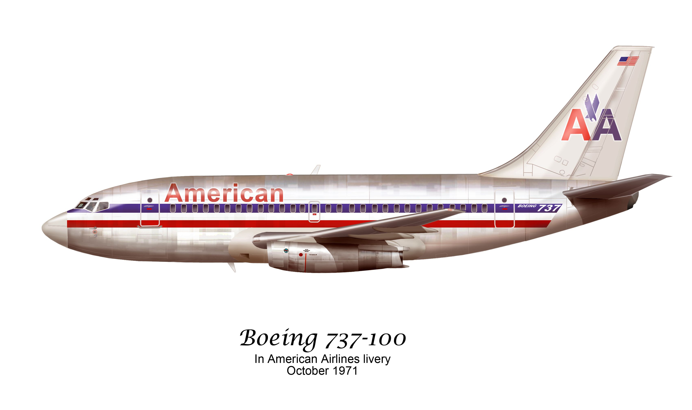

Boeing 737-100
El Boeing 737-100 fue la primera variante de esta modelo fabricada en 1964. Esta aeronave podía transportar hasta 115 pasajeros; tenía una longitud de 28 metros y su peso máximo de despegue (MTOW) era de 42,411 kg. En un principio, Pratt & Whitney se encargó de fabricar los motores para esta versión, los JT8D-7.
La versión -100 del 737 realizó su primer vuelo el 9 de abril de 1967. La línea de producción solamente fabricó 30 unidades de las cuales, la aerolínea bandera alemana, Lufthansa, fue la mayor operadora de esta versión con 22 unidades en su flota, seguido de Malaysia Airlines con cinco unidades y la colombiana Avianca con dos.